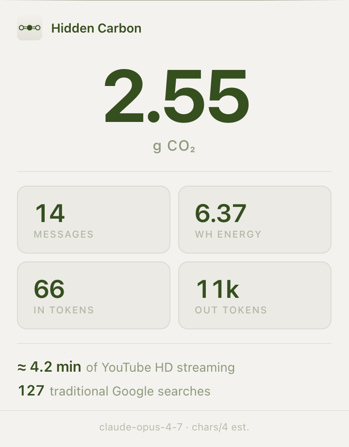

Score an LLM query as ~free — they only see kilobytes, not the GPU.
ChatGPT only — and a bare number with nothing to compare it to.
Reads the conversation from Claude, ChatGPT & Gemini, stores it per conversation, shows the footprint in the toolbar.
TypeScript · Chrome MV3 · no backend, no telemetry.

Constants calibrated to Epoch AI's ≈0.3 Wh per typical query.[9] Output tokens cost ~6× input — the model writes one token at a time.
Live grid intensity per region from Electricity Maps, averaged with weight ∝ 1 / distance — the region you're most likely routed to dominates.
So we count server-side for AI, but the whole chain for streaming. Counting just the server for video would report 5% of its real footprint.
Both popular figures had errors or were decades out of date. We took each baseline from the corrected primary source.
≈ 7 searches, and a fraction of a minute of video.
Not negligible — but nowhere near the "kettle of water" you read about. (500 in / 1,000 out tokens; Claude grid ≈231 g/kWh.)
And we can't tell which way the error runs.
Margins would push it high; pricing inference below cost pushes it low. The gap really shows that price has come loose from physical cost in this market.
≈ 1.7–2× → about 0.25–0.3 g over the model's life.
For popular models, training roughly doubles the number — it doesn't change the story. (For rarely-used models it can dominate.)
Narrow scope, constants from primary literature, boundary stated out loud — an estimate we can defend, not one that looks more precise than it is.
[1] Masanet, E. et al. (2020). Recalibrating global data center energy-use estimates. Science, 367(6481).
[2] Vanderbauwhede, W. (2024). Estimating the increase in emissions caused by AI-augmented search. arXiv:2407.16894.
[3] Kamiya, G. / IEA (2020). The carbon footprint of streaming video: fact-checking the headlines.
[4] U.S. EPA (2024). Supply Chain GHG Emission Factors v1.3 (USEEIO), NAICS 518210.
[5] OpenAI / S. Altman, via Axios (2025). ChatGPT receives 2.5 billion prompts per day.
[6] Patterson, D. et al. (2022). The carbon footprint of ML training will plateau, then shrink. Computer, 55(7).
[7] McKinsey & Company (2025). The future of AI workloads.
[8] Stanford HAI (2026). The AI Index 2026 Annual Report (GPT-4 ≈ 5,184 tCO₂e).
[9] Epoch AI (2025). How much energy does ChatGPT use per query?
[10] Jegham, N. et al. (2025). How Hungry is AI? Benchmarking Energy, Water & Carbon Footprint of LLM Inference. arXiv:2505.09598.
[11] Google (2025). Measuring the Environmental Impact of Delivering AI at Google Scale.
[12] Jin, Y., Wei, G.-Y. & Brooks, D. (2025). The Energy Cost of Reasoning. arXiv:2505.14733.
Grid data: Electricity Maps real-time carbon-intensity API; fallback global average from Ember (2024) Global Electricity Review.
Thank you — questions welcome.